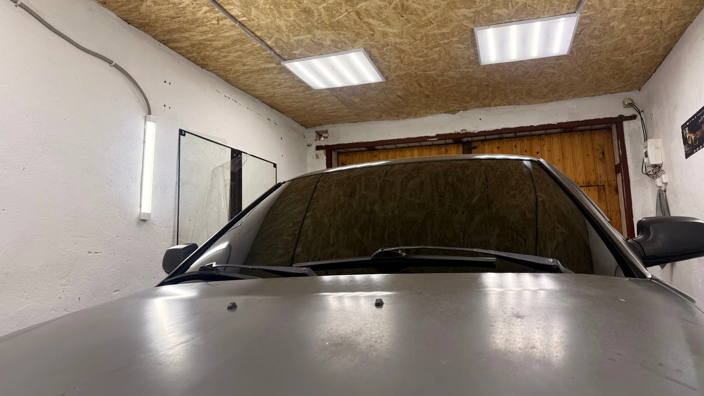
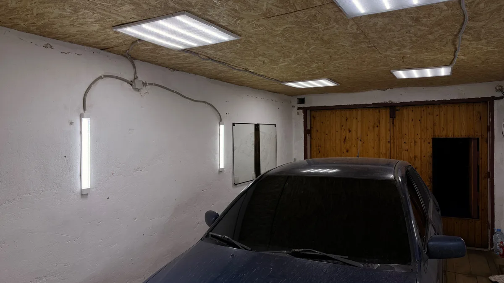
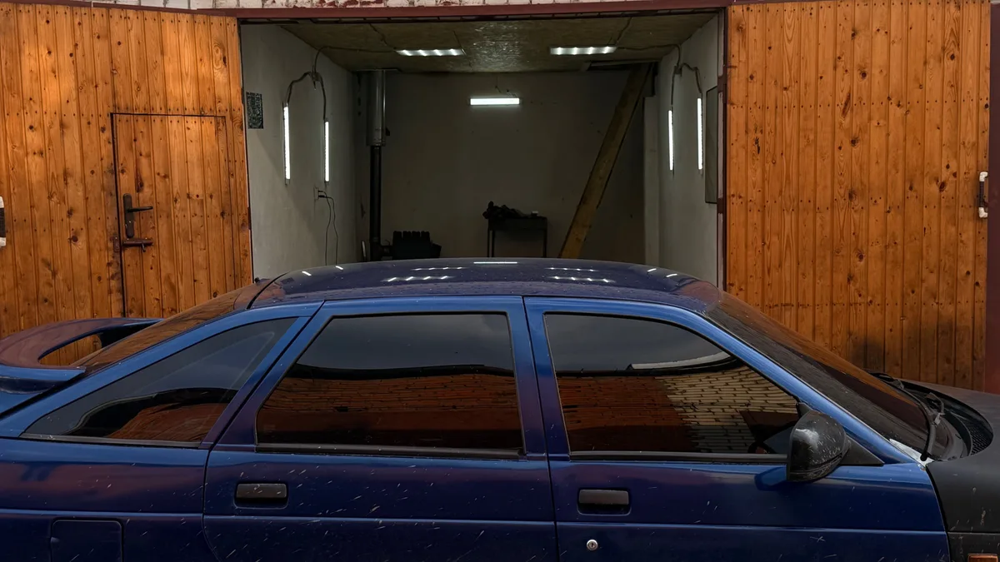
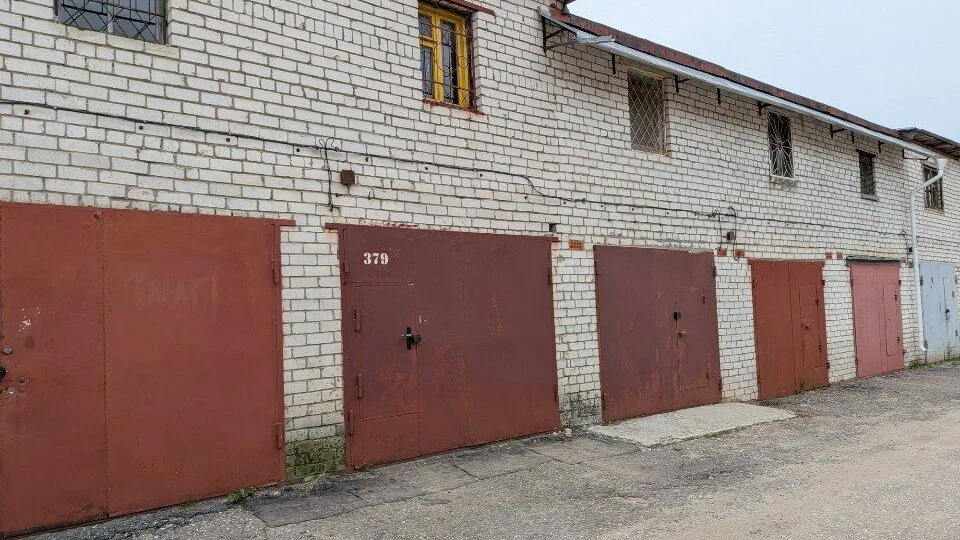

Тонировка, автосвет и детейлинг · АГК Огонёк, 379
Тонировка, автосвет и детейлинг в Йошкар-Оле
Bunkerof: тонировка стёкол, линзы и бронирование фар, химчистка и шумоизоляция салона. К мастеру возвращаются: «делает свою работу качественно и по приятной цене».
- Рейтинг 4,4 на Яндекс Картах, 8 отзывов
- Тонировка: передний полукруг от 3000 ₽
- Предварительная запись, АГК Огонёк, 379

Услуги Bunkerof в Йошкар-Оле
Что входит в услуги
- Тонировка стёкол: передний и задний полукруг, полоса, атермальные плёнки, можно со своим материалом
- Автосвет: Bi-LED модули, обслуживание и регулировка фар, замена стёкол и ламп
- Дополнительный свет: ПТФ, ФСО, линзованные лампы
- Бронирование фар защитной полиуретановой плёнкой
- Детейлинг салона: химчистка с разбором или без, предпродажная подготовка
- Шумоизоляция, покраска пластика, обшивка и чехлы для сидений
Запись, адрес и оплата
- Предварительная запись по телефону или в Telegram
- Адрес: Йошкар-Ола, АГК Огонёк, гараж 379
- Стоимость называют до начала работ
Цены на тонировку, автосвет и детейлинг в Йошкар-Оле
На карточке указаны цены на тонировку. По остальным услугам стоимость называют при записи, она зависит от автомобиля.
Тонировка
- Тонировка переднего полукруга3000 ₽
- Тонировка заднего полукруга4000 ₽
- Атермальные плёнки и полоса на лобовоеуточнить
Автосвет
- Установка Bi-LED модулей (линзованное освещение)уточнить
- Обслуживание фар: разбор, замена стёкол, регулировкауточнить
- Дополнительный свет: ПТФ, ФСО, линзованные лампыуточнить
- Бронирование фар полиуретановой плёнкойуточнить
Детейлинг и салон
- Химчистка салона (с разбором и без)уточнить
- Шумоизоляция салона: полная и частичнаяуточнить
- Покраска пластика салонауточнить
- Обшивка и чехлы для сиденийуточнить
Цены на тонировку - с карточки в Яндекс Картах (давно не обновлялись). Остальное мастер называет при записи по телефону или в Telegram.
Как записаться в Bunkerof в Йошкар-Оле
- 01
Выбрали услугу и время
Укажите услугу, день и час в форме на сайте - запись откроется в Telegram мастера.
- 02
Согласовали стоимость
Марку автомобиля напишите в сообщении. Время подтверждаем в Telegram или по звонку: +7 (987) 713-82-28.
- 03
Приехали в гараж 379
АГК Огонёк, Йошкар-Ола. Автомобиль принимают в боксе со светом.
- 04
Забрали автомобиль
Осматриваете результат на месте и забираете автомобиль.
Фото Bunkerof в Йошкар-Оле



Почему возвращаются в Bunkerof
Качественно и по приятной цене
«Не первый раз уже приезжаю на тонировку к Юре, делает свою работу качественно и по приятной цене» - Максим Д., 18 сентября.
Быстро и без косяков
«Заехал, заклеил быстро, без косяков, и цена очень удивила» - Илья Ш., 18 июля.
Настроил даже сложные фары
«Настроил фары, которые было даже не отрегулировать. Ещё и цены низкие» - Лаура Папаян, 31 июля.
Честный мастер
«Сделают как для своих» - Лаура Папаян, 31 июля.
Отзывы о Bunkerof в Йошкар-Оле
«Не первый раз уже приезжаю на тонировку к Юре, делает свою работу качественно и по приятной цене, рекомендую!»
Максим Д. · 18 сентября
«Очень приятный мастер, настроил фары, которые было даже не отрегулировать. Еще и цены низкие. Немного жаль что я в другом городе, таких мастеров честных сложно найти. Всем советую данный сервис, сделают как для своих!»
Лаура Папаян · 31 июля
«Заклеил тонировку качественно и по приятной стоимости, рекомендую»
Андрей П. · 3 августа
Отзывы с карточки на Яндекс.Картах, без правок.
Частые вопросы о детейлинге в Йошкар-Оле
Сколько стоит тонировка в Йошкар-Оле?
По карточке Bunkerof на Яндекс Картах: тонировка переднего полукруга от 3000 ₽, заднего полукруга от 4000 ₽. Цены давно не обновлялись, точную сумму называют при записи.
Можно ли тонировать со своей плёнкой?
В перечне услуг указана тонировка с вашим материалом. Подойдёт ли ваша плёнка, уточните при записи.
Что входит в обслуживание фар?
Разбор, замена стёкол, регулировка и замена ламп. Отдельно ставят Bi-LED модули с линзованным освещением и бронируют фары полиуретановой плёнкой.
Делаете ли химчистку салона?
Да, в перечне услуг есть полный детейлинг салона с разбором или без него и предпродажная подготовка.
Есть ли шумоизоляция?
Да, мастер делает вибро- и шумоизоляцию, полную или частичную. Стоимость зависит от автомобиля.
Где находится Bunkerof?
Йошкар-Ола, АГК Огонёк, 379. Это гараж в кооперативе, автомобиль принимают в боксе с освещением.
Нужно ли записываться заранее?
На карточке указана предварительная запись. Позвоните по телефону +7 (987) 713-82-28 или напишите в Telegram.
Как связаться с мастером?
Телефон +7 (987) 713-82-28 или Telegram @Bunkerof1. Время работы на карточке указано как круглосуточно, лучше уточнить при записи.
Запишитесь в Bunkerof на удобное время
- Адрес
- АГК Огонёк, 379, Йошкар-Ола
- Часы
- по предварительной записи, на карточке - круглосуточно
- Телефон
- +7 (987) 713-82-28